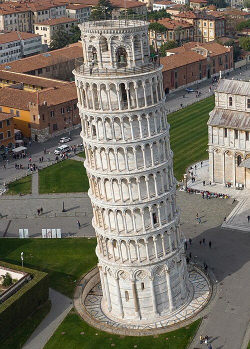
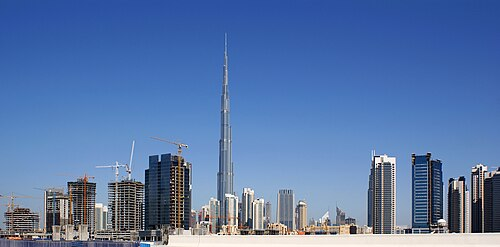

მოგესალმებით ჩემს ვებსაიტზე

პიზის დახრილი კოშკი (იტალ. Torre pendente di Pisa) — სამრეკლო კოშკი, პიზის ეკლესიის ანსამბლის ნაწილი.
საკმაოდ ცნობილია მსოფლიოს მასშტაბით შემთხვევითი დახრილობის გამო. კოშკის დახრა პრაქტიკულად დაიწყო მშენებლობის დასრულებისთანავე
დახრის პროცესი დასრულდა 2008 წელს.

ბურჯ ხალიფა ან ბურჯ დუბაი (არაბ.:برج خليفة „ხალიფას კოშკი“) — სუპერმაღალი ცათამბჯენი დუბაიში, არაბთა გაერთიანებული საამიროებში
აღიარებულია როგორც ადამიანის შექმნილი ყველაზე მაღალი სტრუქტურული ნაგებობა.